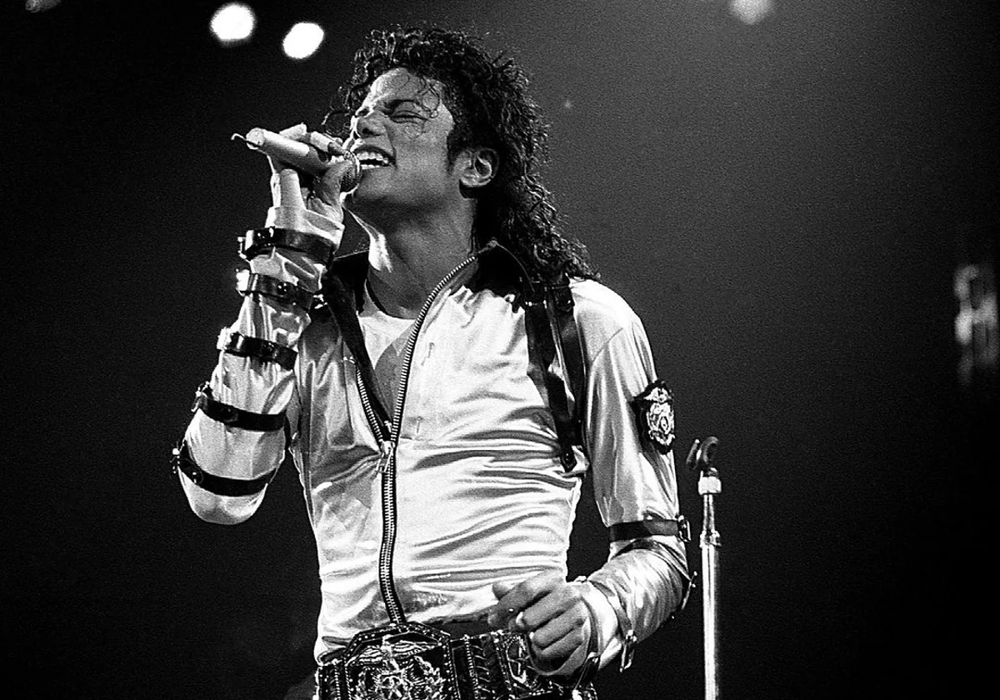

Michael Joseph Jackson (Gary, Indiana, 29 de agosto de 1958-Los Ángeles, California, 25 de junio de 2009) fue un cantante, compositor, productor y bailarín estadounidense.Apodado como el «Rey del Pop», sus contribuciones y reconocimiento en la historia de la música y el baile durante más de cuatro décadas, así como su publicitada vida personal, lo convirtieron en una figura internacional en la cultura popular. Su música incluye una amplia acepción de géneros como el pop, rhythm and blues (soul y funk), rock, disco y dance, y es reconocido como el «artista musical más exitoso de todos los tiempos» por los Guinness World Records
